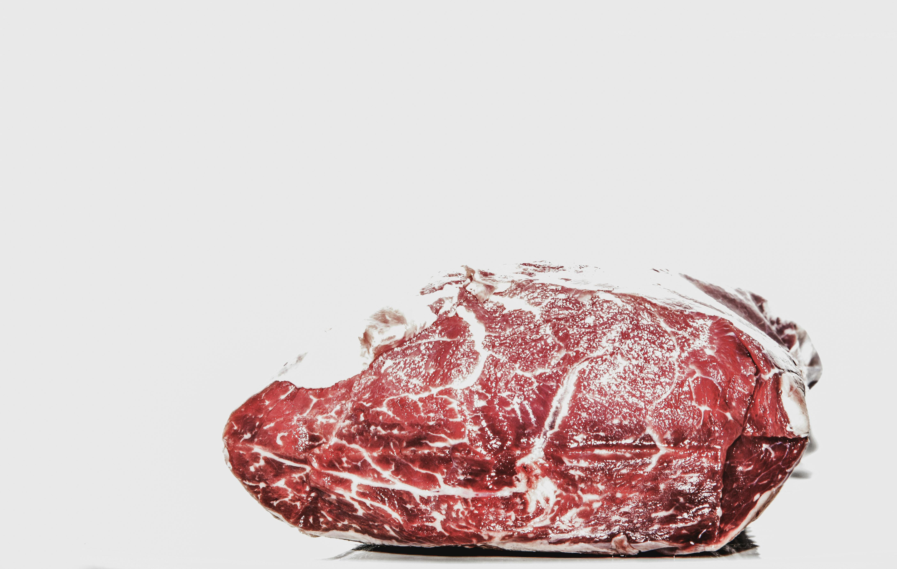
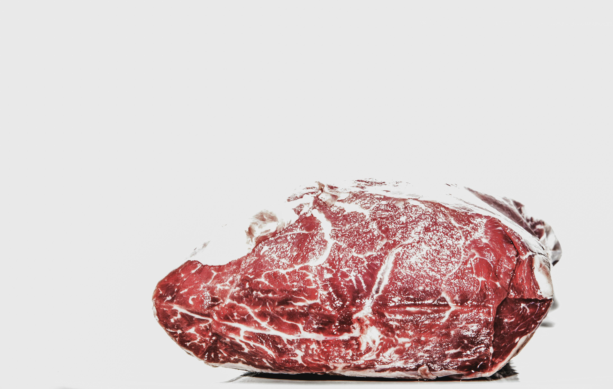
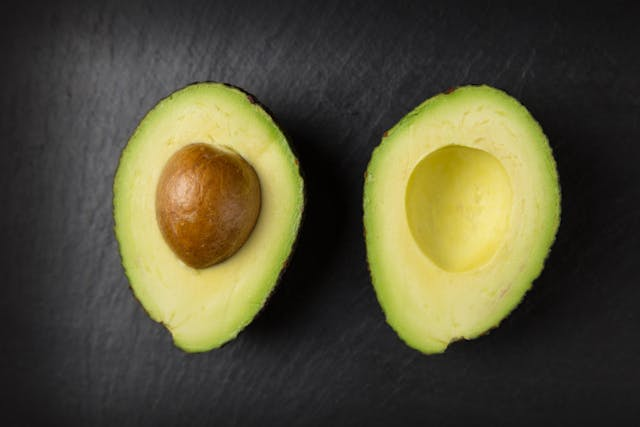
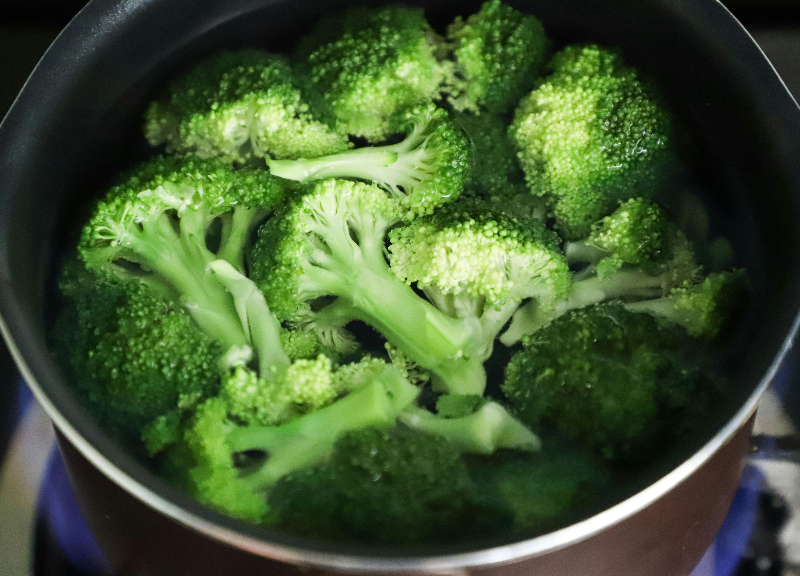
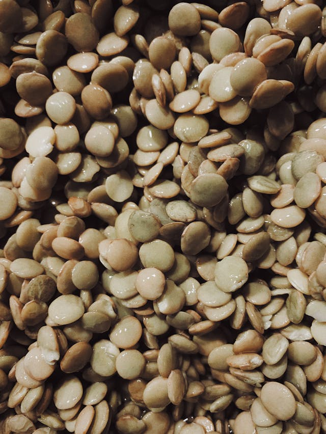
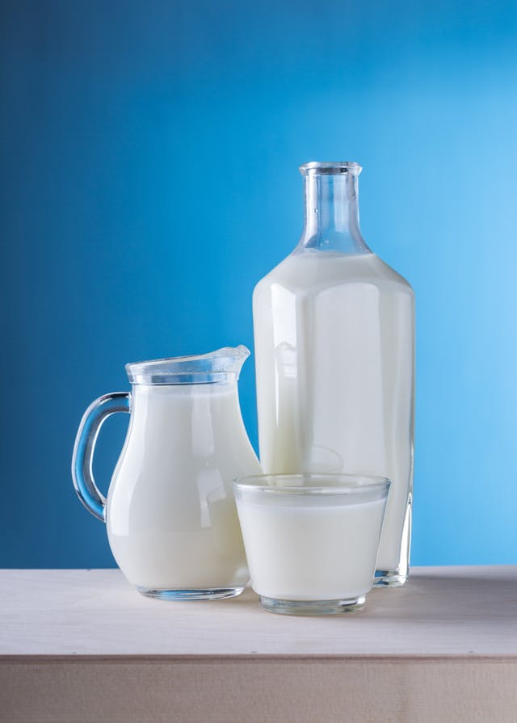
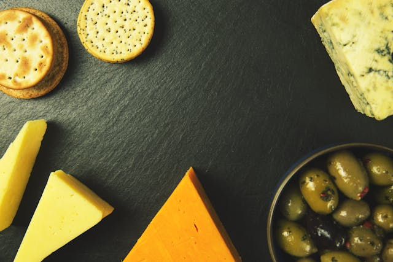
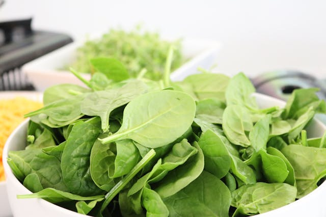
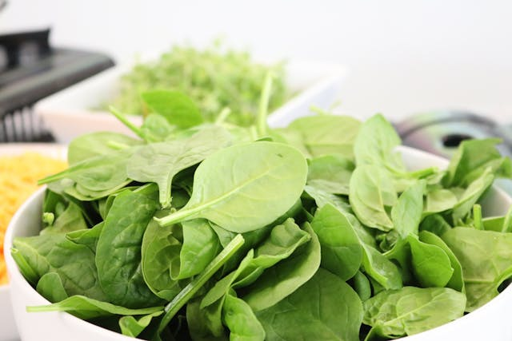

CLASSES OF D
What are the classes of d and their sources? There are seven major classes of d based on their nutrient properties:
Carbohydrates
- Maize
- Rice
- Wheat
- Potatos
Protein
Proteins are large biomolecules and macromolecules that comprise one or more long chains of amino acid residues.
 
Legumes

Legumes
- Egg
- meat
- Legumes
- Greek Yogurt
Fats
Fats in our body are made up of three molecules joined together. This three-molecule structure is called a “triglyceride”.
 Coconut Oil
Coconut Oil
- Nuts
- Avocados
- Coconut Oil
- Goose Fats
Fiber
Fiber is a type of indigestible carbohydrate. Learn more about how fiber is useful for regulating blood sugar and keeping hunger in check
  Pinto Bean- Broccoli
- Lentil
- Split pea
- Pinto Bean
Mineral
vital for improving bodily functions, are present in most ds, fruits, and vegetables
  Seeds- Milk
- Cheese
- Seeds
- Shellfish
Vitamins
a pill containing a specified amount of a particular vitamin or vitamins, taken as a dietary supplement
 
Kale

Kale
- Carrots
- Sweet Potatoes
- Spinach
- Kale